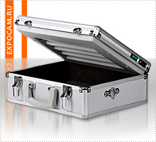

|

Экспонирующие камеры,
предлагаемые нашей компанией, отличаются высоким качеством сборки, продуманным дизайном и доступной ценой.
Экспонирующие камеры
проходят тщательное тестирование перед продажей, что значительно сокращает процент брака. Гарантийное обслуживание составляет 12 месяцев.
|
|
Экспонирующие камеры
Экспонирующая камера – необходимое оборудование
для изготовления печатей и штампов по фотополимерной технологии.
Основным преимуществом фотополимерной технологии является простота и
низкая себестоимость клише будущей печати. Принцип действия всех экспонирующих камер одинаков!
Они различаются лишь суммарной мощностью ламп и размером рабочего поля.
Оборудование для изготовления печатей
Изготовление печатей с помощью экспонирующей камеры Easy Stamp – процесс простой и занимающий всего несколько минут (что актуально для
услуги срочного изготовления печатей). Камера оснащена таймером, позволяющим оператору максимально контролировать процесс засветки фотополимера.
Сочетание
удобства, простоты процесса изготовления и надежности нашего оборудования для изготовления печатей позволяет достигать высоких производственных
показателей, благодаря чему экспонирующая камера Easy Stamp идеально подойдет как новичкам в деле изготовления печатей, так и профессионалам.
Расходные материалы для изготовления печатей
Наша компания предлагает расходные материалы, необходимые для изготовления печатей и штампов по фотополимерной технологии с использованием экспонирующий камеры:
- материалы для изготовления негатива
- материалы для изготовления клише
- уф-лампы для экспонирующей камеры
Самым необходимым материалом для изготовления печатей по фотополимерной технологии является фотополимер. В нашем ассортименте имеется широкий выбор самых качественных полимеров от зарубежных и отечественных производителей (Дихром Люкс, Ideal, Verbatim, Colop).
|
|
|
|